旅行
日本行记
前言
为什么不想写游记了呢。是因为没有找到好的形式？过去总是流水账式地记下每时每刻所在做的事情。可新的形式又该怎么写呢？只记叙自己的观察和思考，最重要的自然是感受。
去之前，其实自己的状态很糟。那时已处于荒废阶段：此前坚持了两个月的良好习惯，在工作和生活的完美平衡，在那几天被打破了。失衡后，才明白坚持是件多么困难的事 --- 十点多为了完成剩下接近100大卡的卡路里消耗，要换上运动服，去操场跑个几圈；明明是周五的晚上，实验室的同学们早已放飞了心，像即将下课的小学生们等待放假，我还要保持耐心...
那么相对的，放弃是很容易的：不过是从早到晚，呆在寝室，到点就去拿外卖，晚上迫不及待地等着朋友们的归来，着急地想多开几把游戏。这样的生活方式，实在太轻易了，因此只要一时沦陷，从中得到一点堕落和疏离的满足 -- 周遭的人们都在工作，唯有我躲在这里，过着悠哉的日子，也便难以跳出。让人想起《无职转生》里现实中的鲁迪，我变得和他一样走不出房门了。
堕落久了，时而会思考人生的意义。若是每天都过得行尸走肉一般，混吃等死，好像也没什么不好。那些容易满足的欲望，满足便好。饿了就去吃饭，困了就去睡觉，饥渴了就去解决。至于其他，一概不去考虑，能长久活下来就好。
心里总会有些阴沉消极的想法，平日里看不见只是时机未到而已。我就是这般前往上海，浑浑噩噩地开启这段旅程。
除了空姐制服丑了些，人也比不上别家的漂亮外，春秋航空没问题
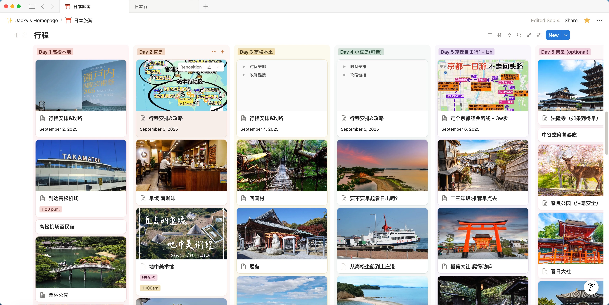
别看我们好像如上图所示一样，做好了一切出行的计划，期待着一场平稳落地的旅行；实际上，机票是出发10天前定下，电话卡5天前买好，京都的住宿3天前预约。若不是lucky好心提醒，我们可能连起航的飞机都坐不上，这就是跟着apate旅行的日子，谁来都是享受。更别提，还有高松的最后一天差点露宿街头。
不过，我早已见怪不怪了。旅行时发生的意外状况，本就是旅途的一部分。
第一次的出国旅行，我们是乘坐「春秋航空」去的。这家航空公司经常被人诟病，臭名昭著。但我实际乘坐的体验，考虑到它机票的价格，并没有坏到哪去 — 除了空姐的制服丑了一些，人也比不上别家的漂亮外，座位是一样的拥挤，像坐在廉价的火车上。飞机上没有赠送的餐饮服务，但付些小钱就能抵上；落地前长达半个小时的推销，也不影响我补觉的酣甜。
在飞机上看完了吉井忍的《东京八平米》。很可惜，此次东京并不在行程之内。日本东京的人情世故，我能在京都弥补吗？
我们上次来，也是这个老头
排队入境时，队伍的前后左右传来中文的对话声，让我产生还身处国内的幻觉。
走出大厅，前往去高松的巴士时，apate和lucky指了指一位工作人员，那是一个上了年纪的中年人，黑白参半的头发、脸胖胖的，身上穿着蓝色的工作服，此刻正在巴士的入口，帮助旅客们把行李搬运到车上。
“我们上次来，也是这个老头。”
坐上巴士，司机也是位上了年纪的中年人，他在座位上侧过身，看着每个上车的旅客，笑着说欢迎。
日本老龄化，初见端倪。
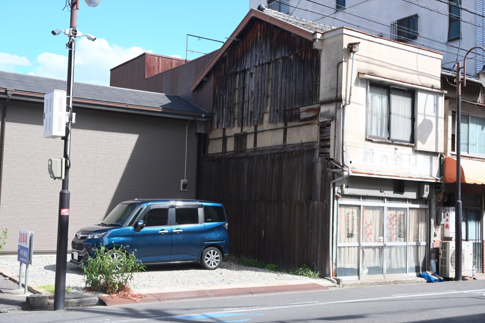
日本的房子很漂亮，自带一种审美的情趣。
房屋的主体用浅黄色的油漆粉刷，时间久了，边缘的地方会冒出了些黑色；浅黄色的门帘挂在白色拉门的后面，既遮挡了太阳，又让人看不见里面；拉门上贴了几张彩色的印花。
屋子旁有块空地，作为私人的停车场。这样的布局在高松本地很常见。
高松属于日本的乡村，若说中国乡村的建筑，同样是低矮的、不到两层楼高的房子，看上去却一点也不漂亮。人们只考虑到实用性，审美上仍没有余裕。这是日本发达的一个地方。
在绿色的栗林公园吃红色的刨冰
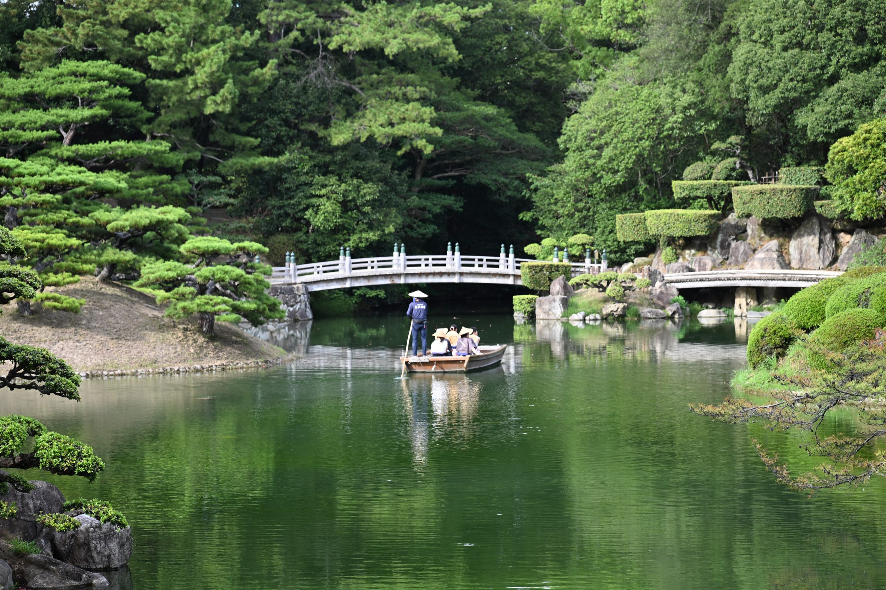
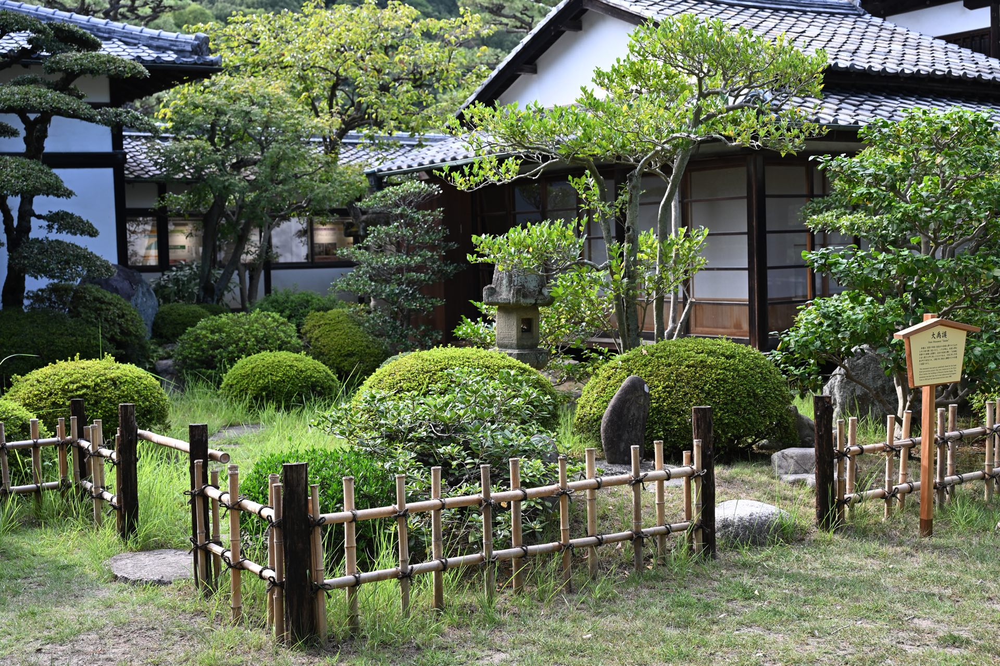
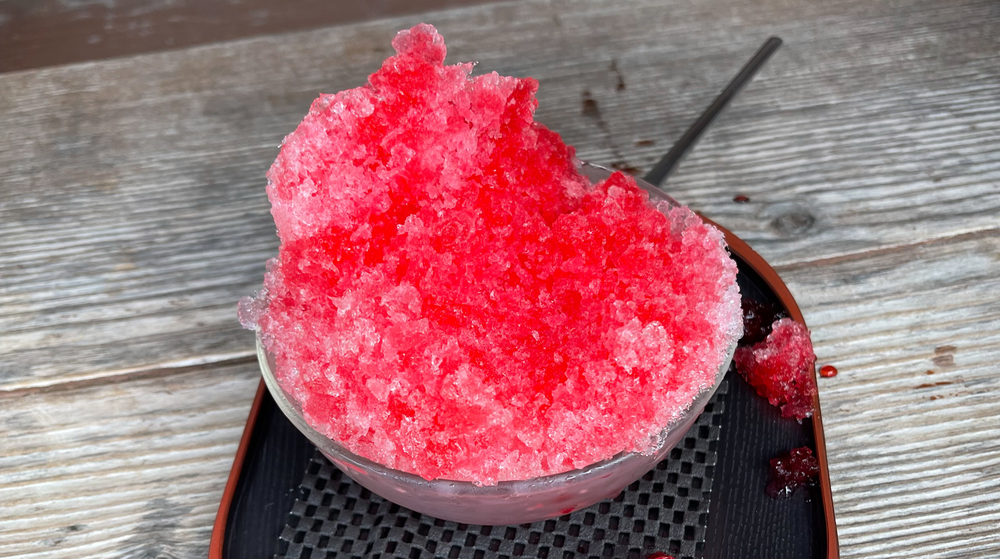
公园和中国江南的风景相似，它有着别雅的庭院：黑白格调的房屋旁，是笔挺的日本松、圆形的灌木丛和葱郁的草地；公园中央是一片像镜子般明亮的湖面，底下映照的天空和本体的一样蓝；湖边修着一座亭子，老人们坐在榻榻米上休息，年轻人在看手机；绿树间藏有可以一览全景的假山。虽荣获米其林三星推荐，却不足为奇。
刨冰是夏天里的毒品，明知吃多了对肠胃不好，却耐不住诱惑，吃了一口，沙冰还在嘴里融化时，就想要吃下一口。
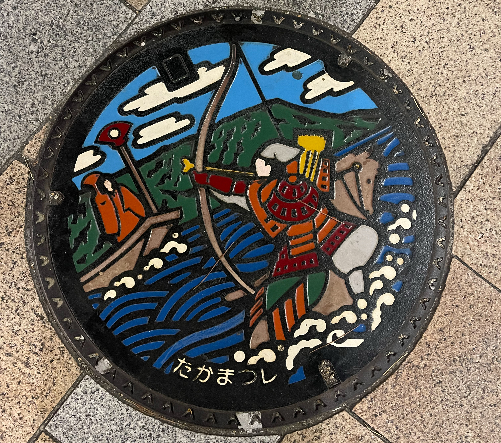
海的那边是什么呢？海的那边就是直岛啊
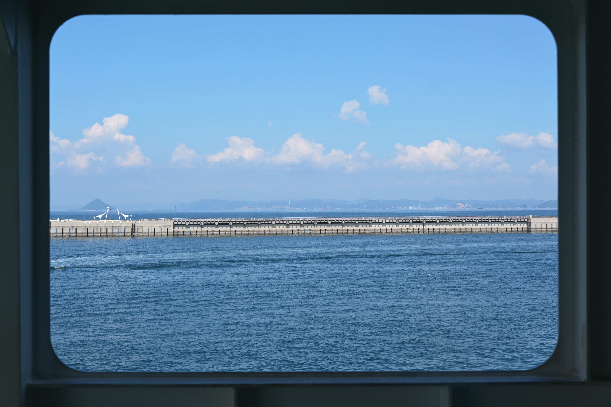
“海的那边是什么呢？” 艾伦看着眼前一片蔚蓝的海，明知道答案，却还是这么问了。
“海的那边就是直岛啊。” 我们三人站在港口铺上橙黄色的地砖上，看着眼前缓缓停靠的白色渡轮，惊叹远方天空和海水的蓝，那是不参杂任何杂质的蓝。
这是我第一次乘船。船舱面积很大，四周靠墙壁的地方摆放着一排排的座椅，中间放了围成一圈的沙发。
在船上大部分时间，都站在露天的甲板上。今天看不到太阳，光亮从云层没有遮挡的地方照出来，还给了没有边际的海水的蓝色，不远处孤岛上植被盖满群山的葱绿色，以及海岸边低矮建筑的点点白色。
在被lucky猛喷击的美术馆收获了一张最完美的建筑摄影

我们先去的是 地中美术馆。明明建造在地下，为什么叫地中呢？
“这美术馆离这不远，就步行五分钟的距离，门票包含在套票里了，但不到半个小时就要关门了。” 这是下午三点半，站在安藤忠雄美术馆门口售票处的老爷爷对我们说的话。
我们听取了，可走了将近15分钟，来到一个很不起眼的地方。展览的只有一层小型建筑，建筑靠着假山修建，门外有几方小池塘，池塘里堆满了玻璃球，其余的地上种上了绿草，三位日本姑娘打着伞坐在绿树的阴影里闲聊。
虽然事后我也跟着lucky他们猛喷这个美术馆，因为它让我们耽误了一个多小时，以致后来没赶上回船的班次，但没想到我在这里收获了一张最完美的建筑摄影。
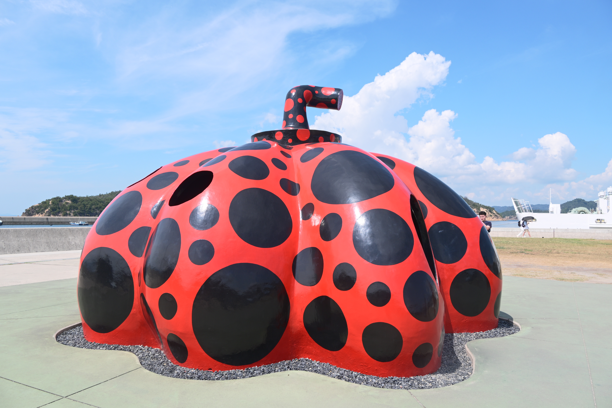
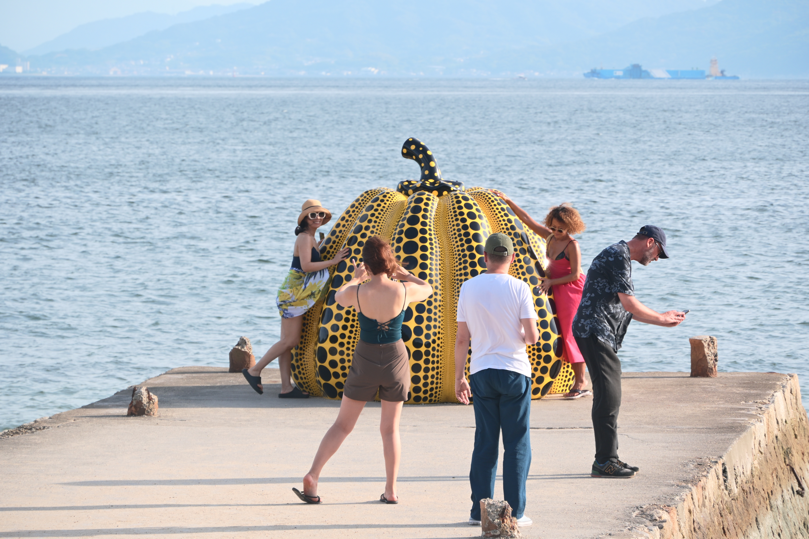

他指了指售票的窗口，只说了一个单词，upgrade

第一次见到他，是有事相求，我们要确定返船最晚的班次。那时我拿着手机翻译的日语，走向前台，看到他站在离前台不远的位置，好奇地打量着我。
第二次见面时，他笑了一笑，认出了我来。谢天谢地，还有快船可以乘，虽然贵了将近一百。在我问到原先的船票怎么办时，他指了指售票的窗口，只说了一个单词，“upgrade”。
可我的妈呀，我怎么听都听不懂，以为是好几个日语音节混在一起的短句子。我摇了一次又一次的头，他重复了一遍又一遍，着急得越说越快，一边又用睁大的双眼看着我，像是在看一个傻子般。
就在那个时刻，在他说了七八遍时，脑子里哪里的电路突然连上，就像一道闪电闪过名侦探柯南的大脑，我一瞬间什么都明白了，嘴巴咧的老大，差点笑出了声。
高松电车上穿着 JK 的高中女生
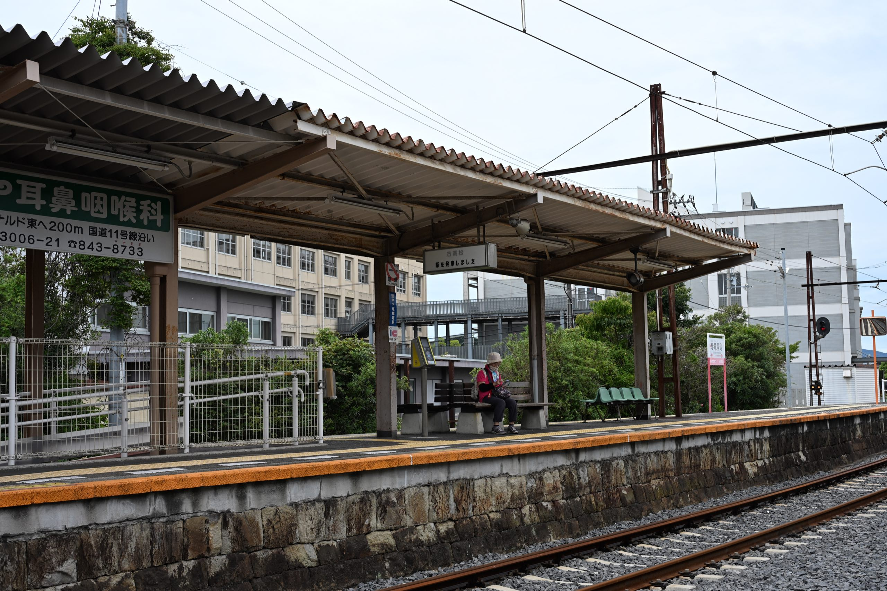
今日的行程，就像平日里自己在杭州的出行一样：睡到十点自然醒，十一点在南咖啡店吃完早餐，乘电车抵达目的地 — 屋岛。
电车上，有两个人吸引了我的注意力。一位是坐在我正前方的老爷爷，不知是哪一点吸引了我。是他即使老年但穿戴依旧整洁、有修养的外表，还是休息时所传递出的安静氛围，搭配着车窗外流动的日本乡下的景色。
另一位是穿着JK的高中女生。这我可太了解吸引我的原因，是那裙子底下裸露的双腿。为此，我才坐到现在的位置，我总是喜欢远距离的欣赏。
听说把抛纸扔下山能有消灾的效果
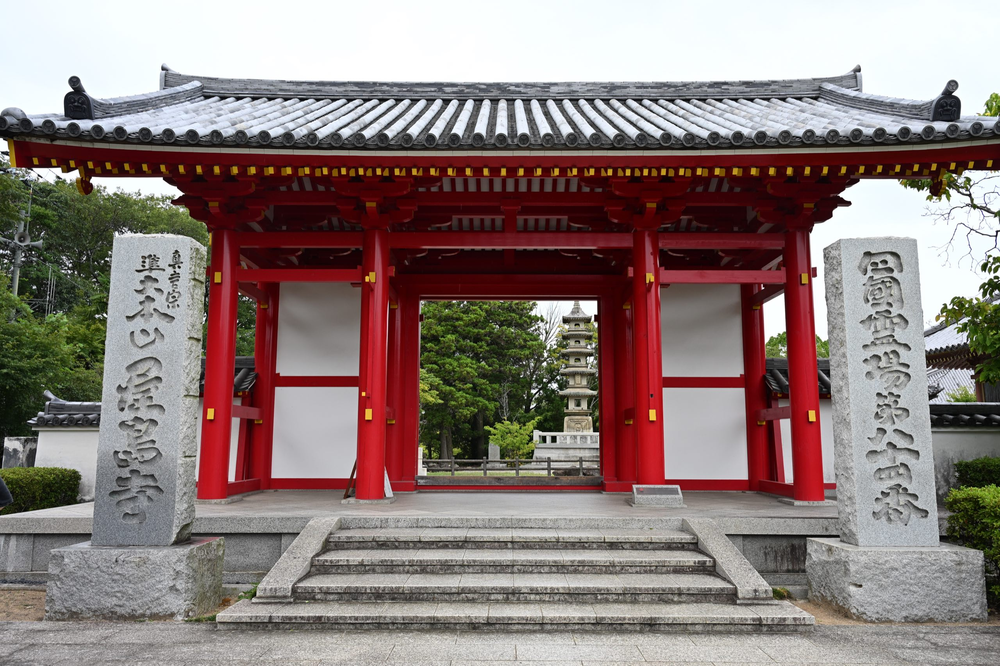
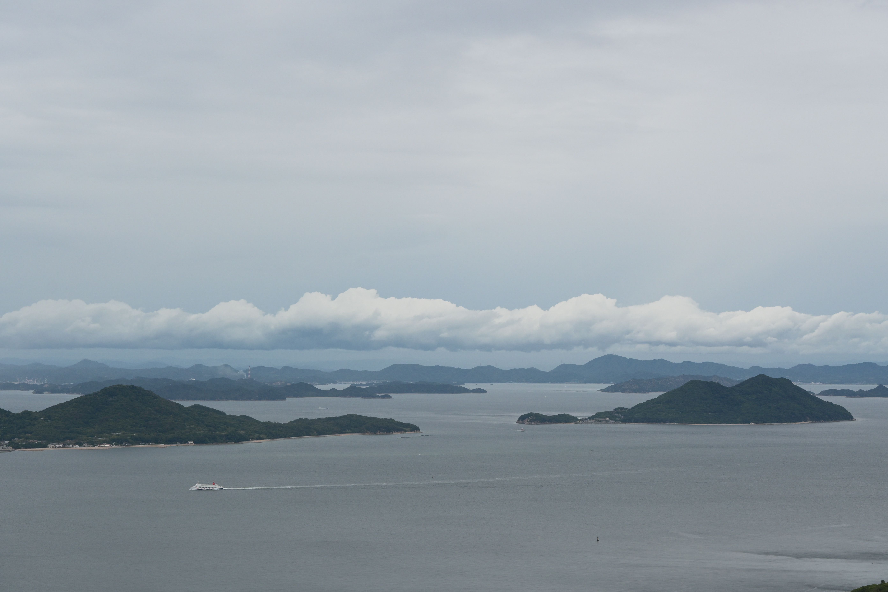
山顶上有座寺庙，叫做 屋岛寺。红色是日本寺庙的主题颜色，进寺庙的门廊、大门屋顶最下层的砖瓦、像汉字“开”形状的鸟居，乃至祭祀用的房屋，全都是红色的。
观景台栏杆的高度只到人的腰部，这似乎是日本一贯的设计风格，仿佛在告诉人们，想跳就跳吧。
离我不到十步的距离，有位年纪和我差不多大的青年，他带着爷爷奶奶，此刻也眺望着底下的海面。青年手里拿着一袋抛纸，听说将纸片扔下山能有消灾的效果。
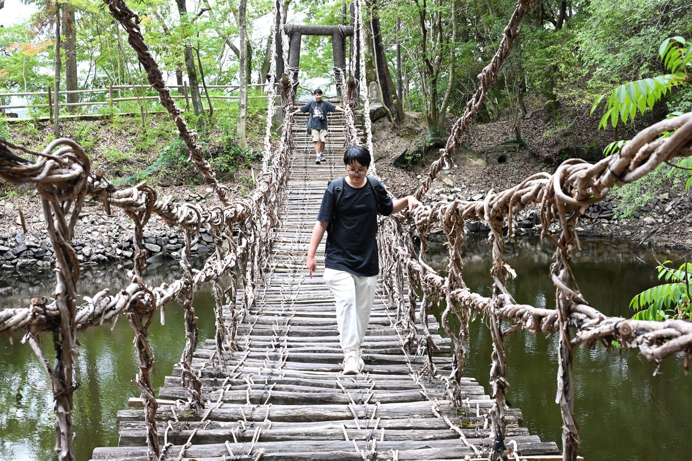
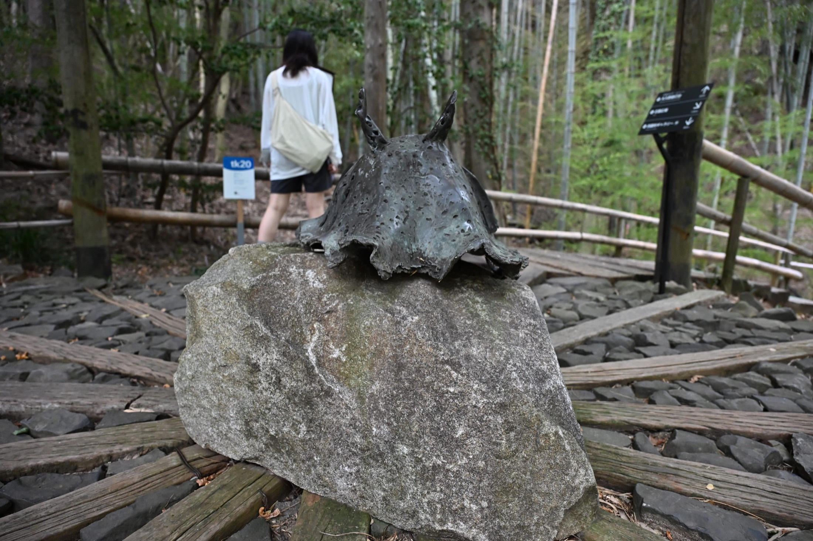
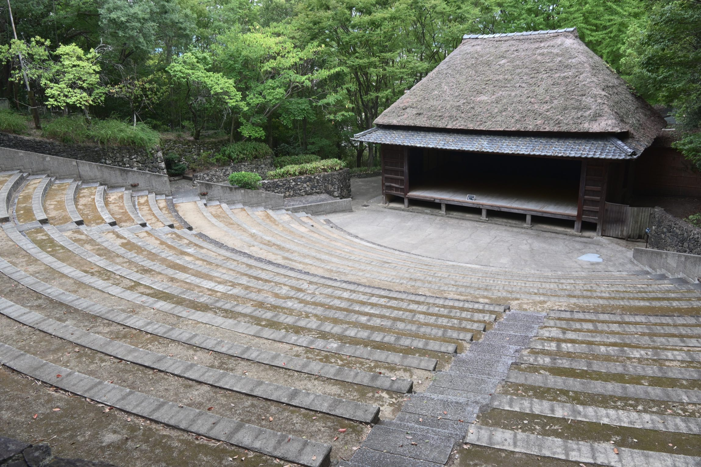
直岛上没有天使的天路之路
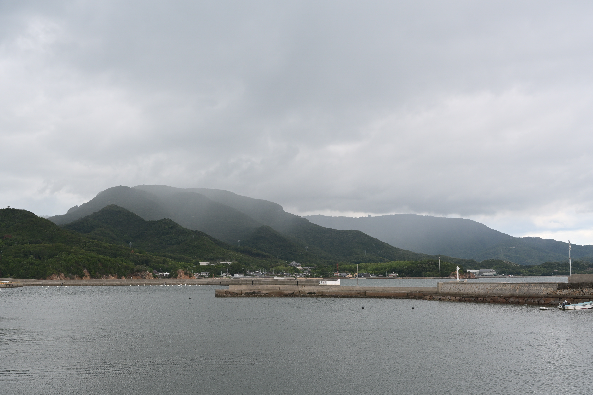
今天是花在交通上的一天，先坐船到小豆岛，再乘巴士到扳手港，渡轮到神户，最后火车抵达京都。难受的是，一路上要随身携带行李。
为什么叫做“天使之路”呢？我只见到一道弯曲的沙滩，沙滩的尽头垂立着一块很大的礁石，石头上长满葱绿的植被，像戴了一顶绿色的帽子。
这般阴沉的天气，就算是天使，也没有心情下到人间的吧。

小豆岛上，apate看着手机，走向马路的中央，平静得俨然像是去赴死一般。一辆车从后侧快速地驶过，没有转向，没有喇叭，像是在配合电影里的镜头一样，与主角擦身而过。
这一幕惊呆了站在马路侧边的lucky和我。我眼看着车从后方开过，可紧急状态下我什么都没有做，既没有出声提醒，也没有拼命地上前拦住。
“我看你是不想活了。”
一个人旅行的六十老太、让座的日本情侣、干练的日语翻译姐姐
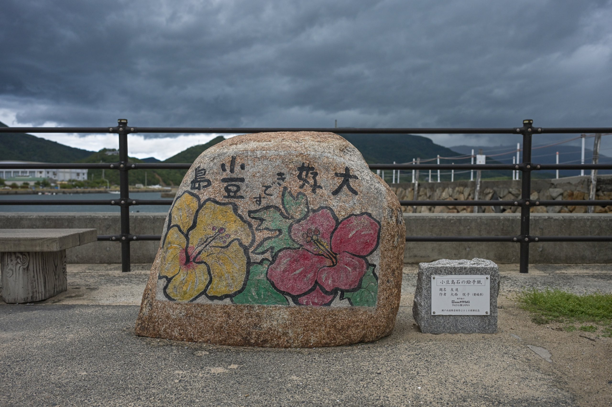
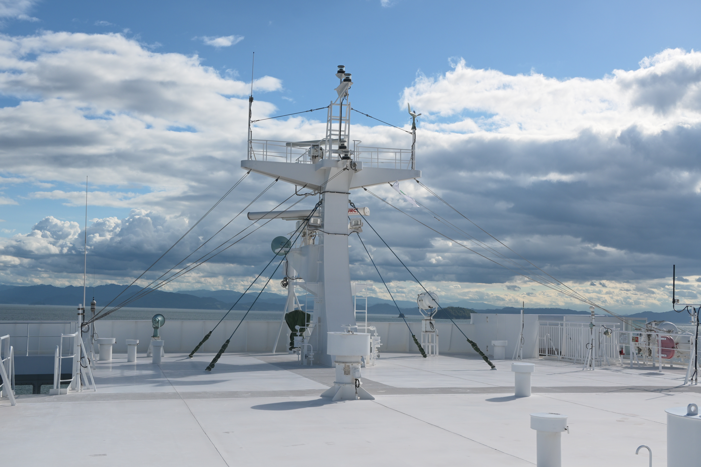
要做一个小时的公交车，才能到扳手港。
车上有位来自中国的老太太很是活络。我以为她不会日语，没想到问完年轻人后，她立马就去找公交车的司机，用和母语者一样的语速问清楚了事情，通票不卖了。
六十老太还能一个人旅行，又有着着随口搭讪的本领，难免会让人敬佩。
在扳手港买船票时，我们遇到了语言不通的问题。apate、lucky和我，站在柜台前，你看看我，我看看你，露出无奈的苦笑。此时，一位形态娇小的女生走到了我们的身后，像只长颈鹿般把头向前探出。
“Do you need some help?”
售票员的日语，由她转述为英语告诉我们；我们用英语回答，再通过她转成日语告诉售票员。分开前，我偷瞄了她好几眼。她真的好帅气。
快来，小智在被采访
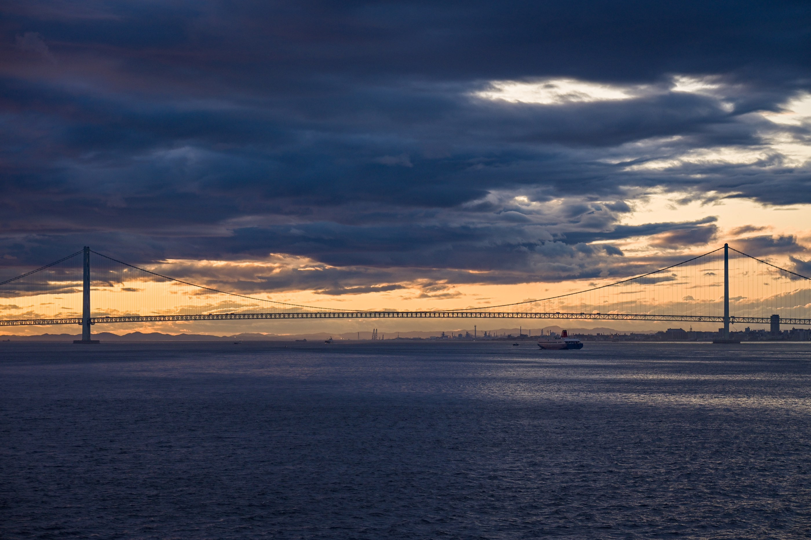
“你好，我是扳手港这艘船的工作人员，这是我的证件。我想做一个采访，请问可以吗？”
后续她问到此次日本旅行的行程安排，对话的语言转成了英语。“先到这里，再去了那里，最后乘船去神户。” 日本的地名真是难记，我一边说着，一边打开谷歌地图给她看。
采访完，睡了一觉，醒来已是下午的五点半，离到港还有一个半小时。我向甲板走去，到时才发现那里已站满了人，大家伙都在等待海上的日落呢。
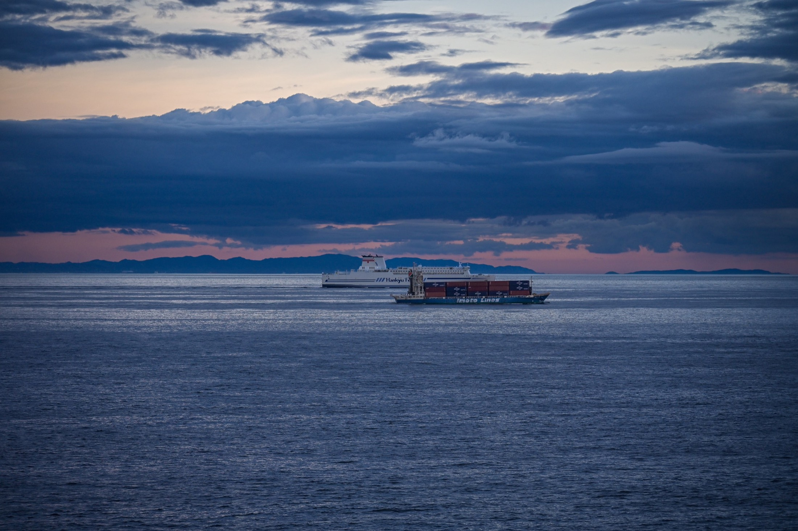
逛稻荷大社像是走访了世界的每个大洲
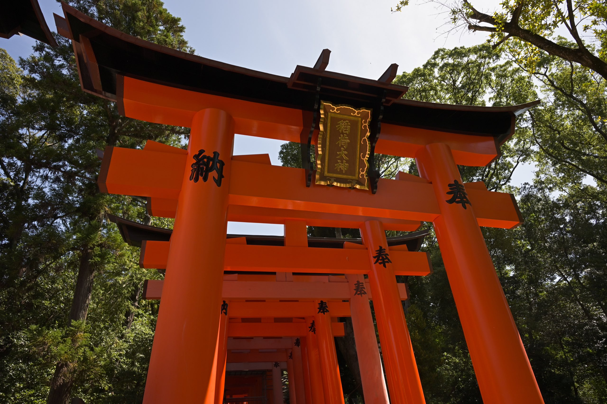
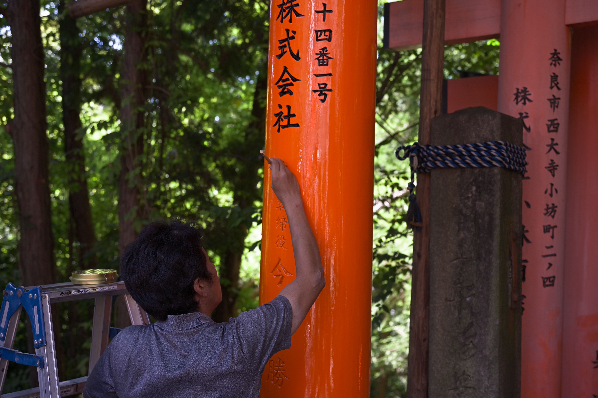
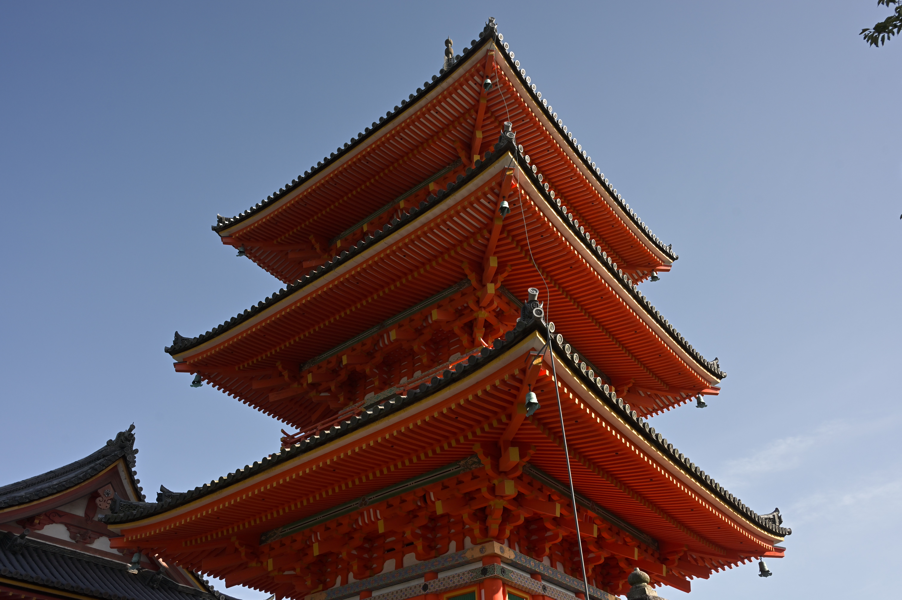
京都是个很红的地方。不是说它每个季节都有大批游客的涌入，而是在游览完景点后，红色会烙印在脑子里。
“良缘祈愿、心愿成就” 这是我在稻荷大社火焚串上写下的愿望。但现世中若不争取，愿望是不会自动实现的。
一路上我走得缓慢，心里称逛稻荷大社为另一次爬山。从山底出发，爬到山顶，是长达一个小时不间断的石子阶梯。
我像是走访了世界的每个大洲一般。
清水寺前俄国姑娘嘴里一直说着perfect
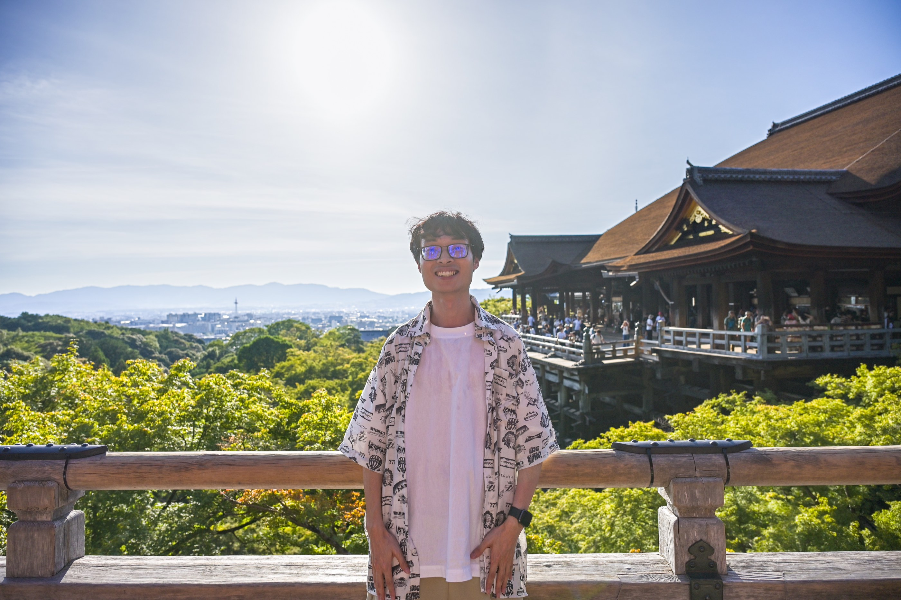
这张照片拍摄得并不好，人物逆光，显得脸和露出的手臂很黑；天空白得过亮，使得背景的寺庙像是被层阴影笼罩着；栏杆外的枫叶既没有春天的翠绿，又未到入秋的枫红。我是一点都不明白，为何离我五步远、站在一旁看着拍摄的俄国姑娘嘴里一直说着，perfect。